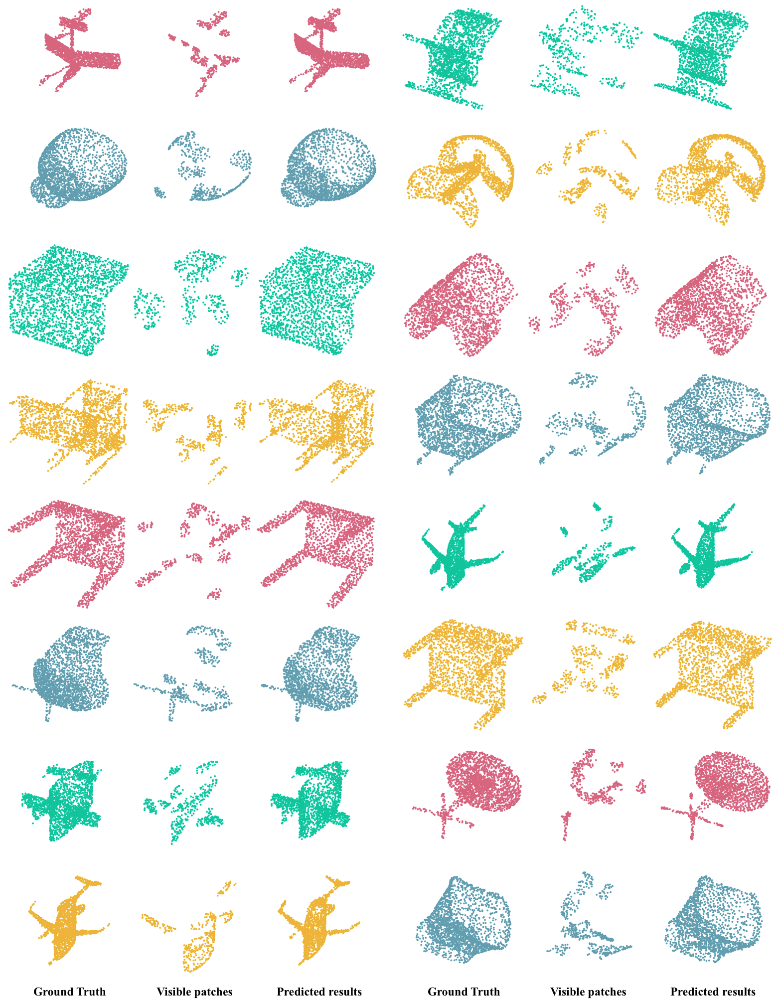
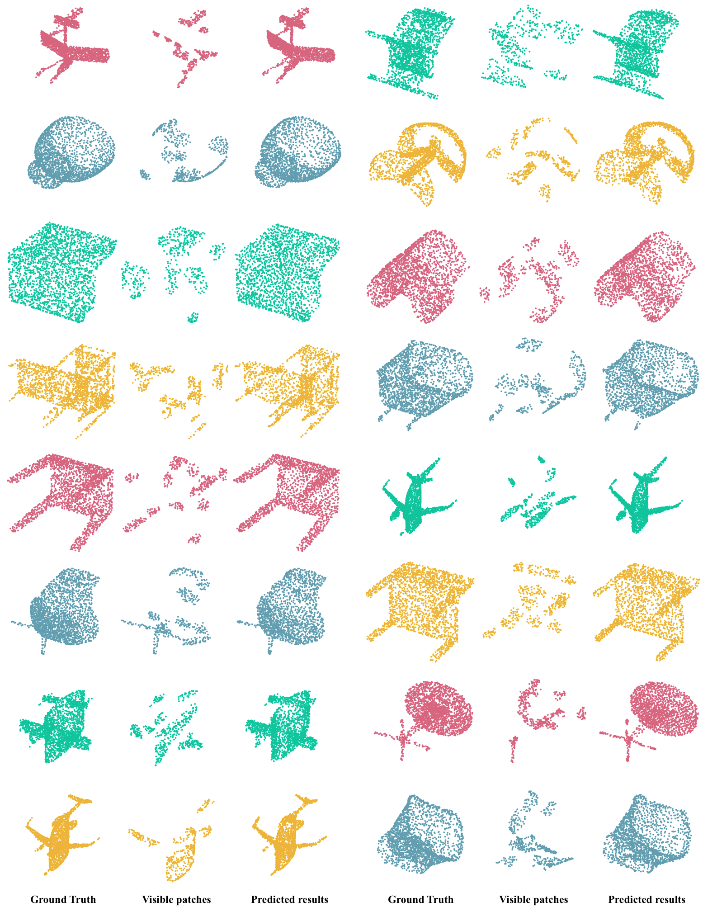
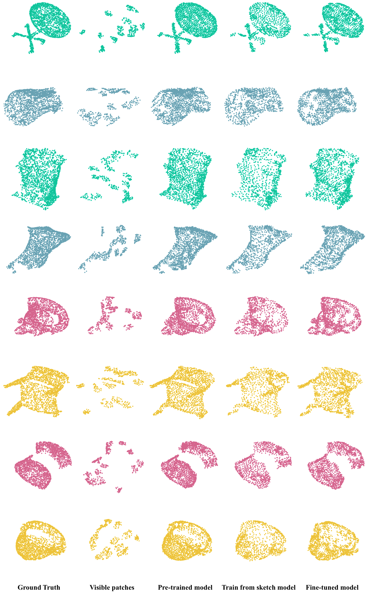

Reconstruction on ShapeNet
Reconstruction results of DiffPMAE with multiple categories. Input point cloud and predicted results are 2048 points. The predicted results are generated by DiffPMAE with mask ratio 0.75.
Point cloud streaming is increasingly getting popular, evolving into the norm for interactive service delivery and the future Metaverse.
However, the substantial volume of data associated with point clouds presents numerous challenges, particularly in terms of high bandwidth consumption and large storage capacity. Despite various solutions proposed thus far, with a focus on point cloud compression, upsampling, and completion, these reconstruction-related methods continue to fall short in delivering high fidelity point cloud output.
As a solution, in DiffPMAE, we propose an effective point cloud reconstruction architecture. Inspired by self-supervised learning concepts, we combine Masked Auto-Encoding and Diffusion Model mechanism to remotely reconstruct point cloud data. By the nature of this reconstruction process, DiffPMAE can be extended to many related downstream tasks including point cloud compression, upsampling and completion. Leveraging ShapeNet-55 and ModelNet datasets with over 60000 objects, we validate the performance of DiffPMAE exceeding many state-of-the-art methods in-terms of auto-encoding and downstream tasks considered. We will release source code upon acceptance of the paper.
Reconstruction results of DiffPMAE with multiple categories. Input point cloud and predicted results are 2048 points. The predicted results are generated by DiffPMAE with mask ratio 0.75.
Reconstruction results of DiffPMAE on ScanObjectNN dataset, main split without background. The predicted results are generated by DiffPMAE with mask ratio 0.75.
Upsampling results of DiffPMAE with multiple categories. Input low resolution point clouds are contains 2048 points, high resolution and generated results are contains 8192 points. Our model is trained based on pairs of Hi-res GT and Lo-res GT and use Visible parts to generate the Hi-res predicted results. The predicted results are generated by DiffPMAE with mask ratio 0.4.
@inproceedings{li2024diffpmae,
author = {Yanlong Li and Chamara Madarasingha and Kanchana Thilakarathna},
title = {DiffPMAE: Diffusion Masked Autoencoders for Point Cloud Reconstruction},
booktitle = {ECCV},
year = {2024}
}